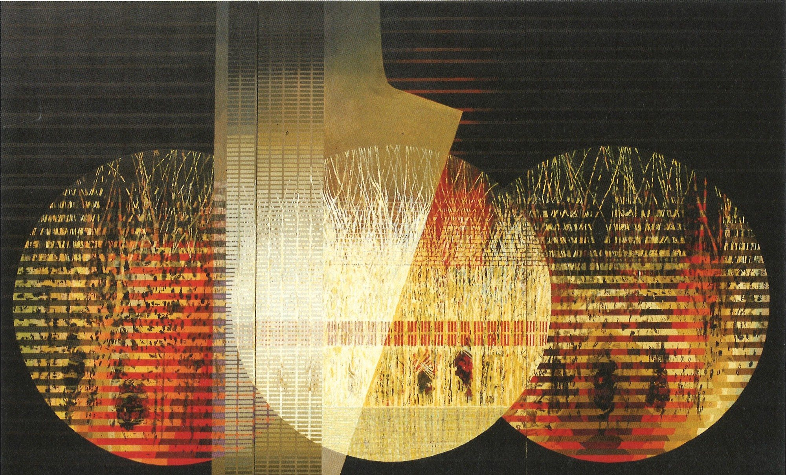

캔버스 위의 작곡가 — 빛과 색채의 오르피즘
이주영
걸음을 옮길 때마다 저 멀리서 그림이 다가옵니다. 안개 속에서 떠오르는 원과 색띠, 진동하는 빛과 소리 — 이주영의 화면 속으로 천천히 걸어 들어가 보세요.
SCROLL
“나에게 그림은
보이는 소리이며,
보이는 소리이며,
색채는
진동하는 빛이다.
진동하는 빛이다.
캔버스 위의 원과 띠는
멈추어 있지 않고,
멈추어 있지 않고,
보는 이의 걸음마다
다른 얼굴로 울린다.”
다른 얼굴로 울린다.”
— 화가 이주영의 노트 중에서
The Method
돗자리를 짜듯, 소리를 짠다
물감으로 그린 종이를 가늘게는 3mm까지 잘라, 화면 위에 한 가닥씩 엮어 붙인다 — 마치 돗자리를 짜듯, 색채와 형태를 촘촘히 직조해 소리의 결을 만드는 작업이다. 1978년 첫 개인전 이후 40여 년, 화가는 이 손끝의 노동으로 “보이는 소리”를 완성해왔다.
“소리는 색을 보게 해주고,
색은 소리를 듣게 해준다.”
The Gallery
전시실을 걷다
세 개의 전시실이 이어집니다. 문을 지날 때마다 새로운 주제가 열리고, 방 안에서는 여러 점의 그림이 저 멀리 오른쪽에서 나타나 왼쪽으로 흘러가며, 걸음을 옮길수록 점점 눈앞으로 다가옵니다.
SCROLL TO WALK FORWARD